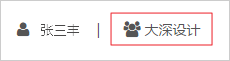

卯丁 / 项目管理 / 项目立项
项目管理的第一步是对项目进行立项，也即创建项目。
1、首先，确认当前用户是在将要立项的项目的“项目立项人”的组织架构界面中（页面右上角“当前组织”）；
如图：
2、在“个人工作主页”或“经营管理”栏目下的项目列表页面，点击“项目立项”按钮，选择需立项项目的类别后进入“项目立项”页面；
3、填写项目名称等各项参数。其中，对“项目立项”来说，项目名称、甲方单位、设计范围及设计阶段是立项必填项。
“甲方单位”可在本团队的“常用客户”列表中选择，若常用客户列表中没有此单位，可以点击输入框中的“+”号添加，成功添加后此单位即成为“常用客户”，后续立项项目可直接选择此单位为“甲方单位”。
“乙方单位”可在本团队、同组织下的事业合伙人团队群体及平台中任意其它团队之中选择。
“设计阶段”可同时输入其对应的“合同约定进度”。此处“设计阶段”项将决定项目管理中后续“经营任务”（依托于项目既定的设计阶段）的签发。
“合同扫描件”支持pdf格式的单个文件。
输入确认各项参数点击“保存”成功提交后将完成项目立项，后续可以随时完善或修改修改各项参数内容。

